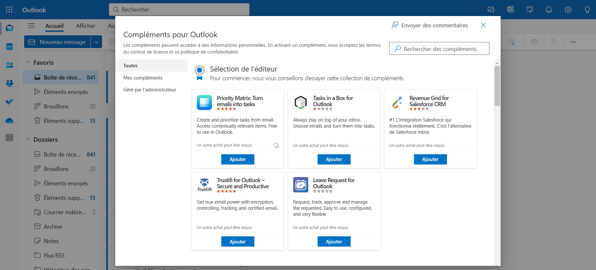
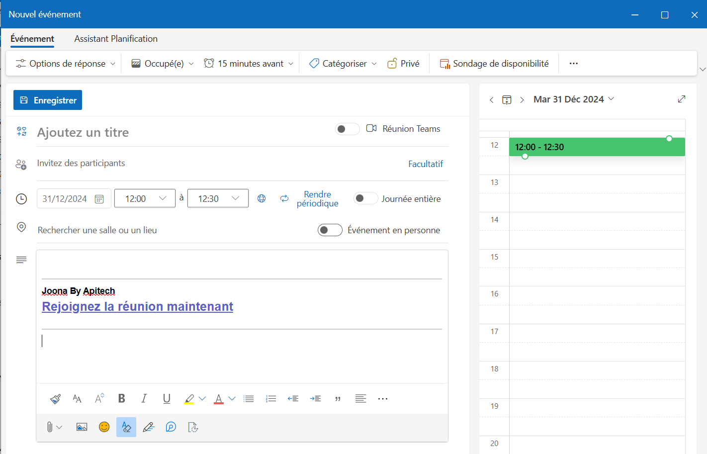

🔍 Présentation
Joona Meet un Add-in pour Outlook qui facilite l'organisation de réunions sur notre plateforme
Joona. Lors de la planification d'un événement via l'Outlook Planner, il génère
automatiquement des liens de visioconférence Joona lorsque vous créez un nouvel événement dans votre calendrier
Outlook. Une solution simple, rapide, et sécurisée pour vos réunions en ligne. Plus besoin de copier-coller des
liens manuellement, l'add-in s'occupe de tout pour vous.
🔗 Installation
Pour installer le complément, suivez les étapes ci-dessous :
Étape 1 : Ouvrez Outlook, cliquez sur « Compléments » dans le menu principal.

Étape 2 : Cliquez sur « Ajouter un complément personnalisé » →
« À partir d’une URL… » ou « À partir d’un fichier… ».

Étape 3 : Collez l’URL suivante ou importez le fichier manifest :
https://joona.fr/plugin-outlook/manifest.xml
Étape 4 : Créez un nouvel événement dans Outlook. Le complément ajoutera automatiquement un
lien Joona dans le corps de l'invitation :

🎉 Vous êtes prêt à organiser vos réunions avec Joona directement depuis Outlook !
❓ FAQ
Q : Je ne vois pas le lien de réunion dans mon événement ?
A : Vérifiez que le complément est bien activé et que vous êtes sur un événement compatible (lecture ou
création).
Q : Est-ce que cela fonctionne hors ligne ?
A : Non, une connexion Internet est nécessaire pour accéder à Jitsi Meet.